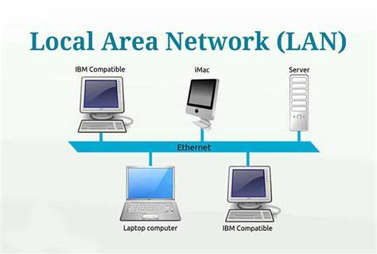
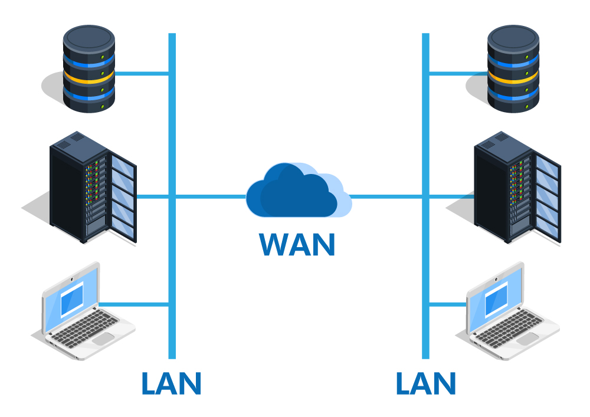

Types Of Network

.jpg)
🌍 A Wide Area Network (WAN) is a large-scale communication network that spans across cities, countries, or even continents. Unlike smaller networks such as Local Area Networks (LANs) or Personal Area Networks (PANs), WANs are designed to connect multiple smaller networks together, enabling long-distance communication. They rely on technologies like fiber-optic cables, satellite links, and leased telecommunication lines to transmit data over vast geographical areas. The internet itself is the largest example of a WAN, linking millions of private, public, academic, and government networks worldwide.
⚡ WANs are essential for businesses, governments, and organizations that operate in multiple locations, as they allow employees and systems to share information securely and efficiently across great distances. They support applications such as email, video conferencing, cloud computing, and centralized data storage. While WANs provide immense connectivity benefits, they can be more expensive to set up and maintain compared to smaller networks, and they often face challenges like latency, security risks, and bandwidth limitations. Nonetheless, WANs remain the backbone of global communication and digital collaboration.
